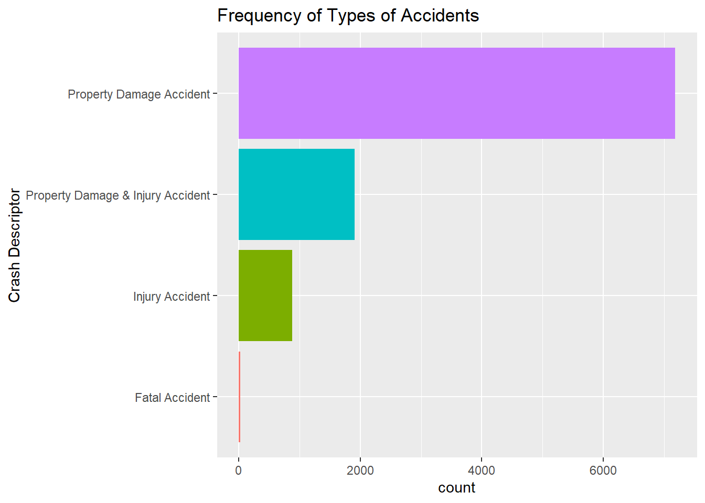
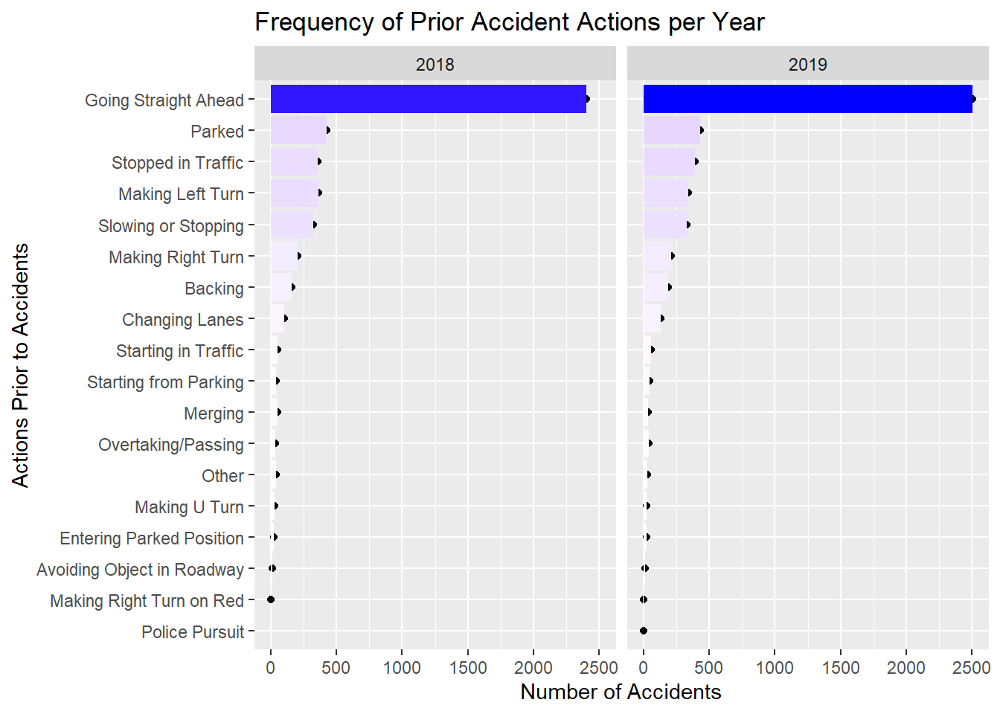
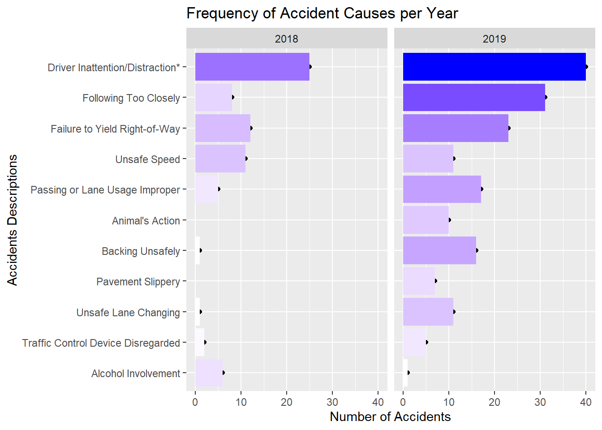
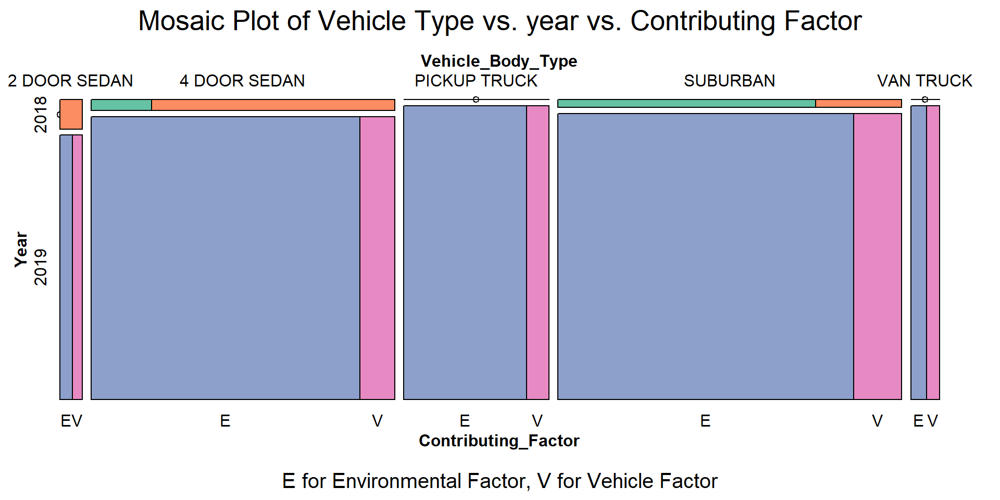
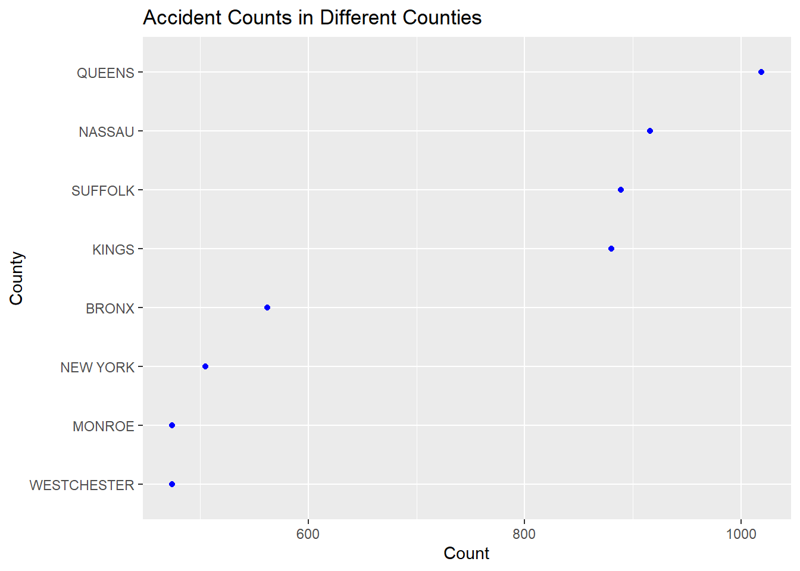

Chapter 6 Case

For the case data, we looked into the count of different types of accidents at first. We can see apparently from the bar plot that:
* Property Damage Accident occurred the most.
* Property Damage with Injury Accident.
* Fatal Accident happened the least.

Then we used a cleveland plot to see where accidents happened the counties in New York State with the top 8 accident frequency:
* Crash accidents happened the most in “Queens” County.
* A very large amount of accidents happen in “Queens”, “Nassau”, “Suffolk” and “Kings”.
* There are other counties other than these 8 counties, but each of them has a relatively much smaller proportion of accidents when compared with the first 4 counties above.

In this plot, we visualize the variation of number of accidents in Hours of a day. The line plots are split by years.
* Two years have the same trend.
* From 12PM-3PM, number of accidents decreases. It’s going late, so there are fewer cars on the road and thus fewer accidents.
* From 4PM-8PM, number of accidents increases because people in various occupations are start going to work.
* From 9PM-10PM, the number of accidents drops a little bit. We are not sure why. probably many people has already arrived to their work places, so there are relatively fewer cars on the road.
* From 11PM-17PM, the number of accidents keeps increasing and finally reaches the peak of the day at 17PM. In this period, the city is in the busiest mode. Especially at around 17PM, people finish their jobs and travel to other places.
* Since 18PM, the number of accidents keeps dropping as the sun goes down.

In this plot, we use a heatmap to show the frequency of accidents in specific “Road Type” and “Road Surface Condition”. In “Road Type”, “straight and level” has much more intensive weight than the other types because majority of road is this type. Thus, for visualization purpose, we exclude this type and focus on the other less common types:
* Even if we exclude the “straight and level” road type, “straight and Grade” has the top frequency. This is aligned with the finding in the first section that most of accidents happen when the cars go straight ahead. Probably some drivers tend to drive faster in straight road.
* Whatever the road surface is dry, wet or with snow, the “Straight and Grade” road still have the largest frequency.
* When the road is on “Hill Crest”, there are only a few accidents. Of course there are much less these road types. However, on hill crest, drivers are also drive more carefully than usual.
6.1 Individual

From this plot, we can see that:
* In each age group, more males are involved in accidents than females.
* The number of accidents is low before 18 years old. These people are mostly the passengers.
* After 18 years old, the number of accidents increases dramatically and reaches the peak in age of 25. Probably young people are tend to drive less safely.
* Then, the number of accidents is constantly decreasing.

Since majority of people in the accident are uninjured or only minor injured, we decided to explore the patterns in serious injuries.
* More males are injured to death than females.
* Females are easire to be shocked.
* More males are recorded as unconscious or semiconscious. It is possible that males tend to involve in more serious accidents.